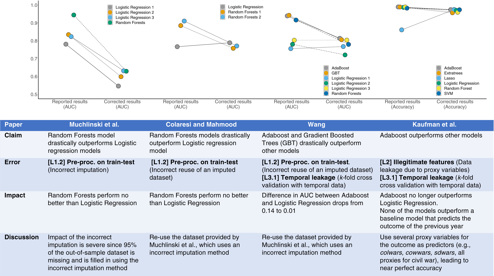
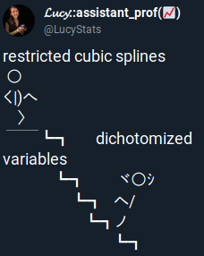
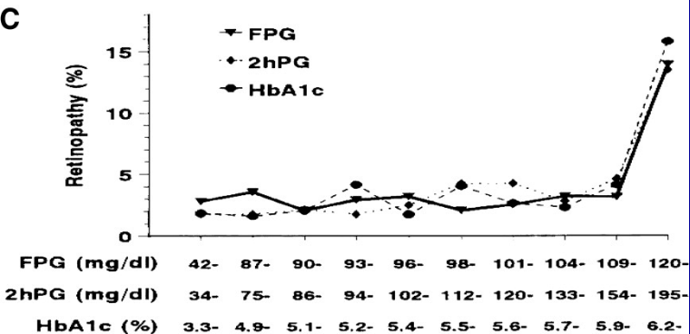
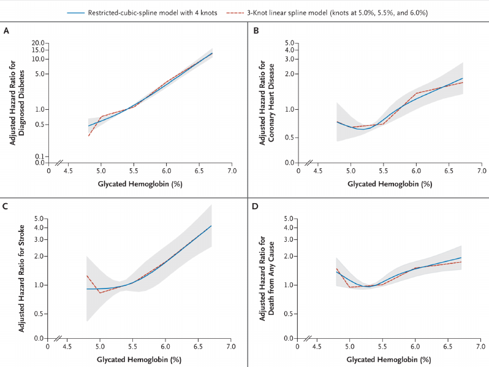
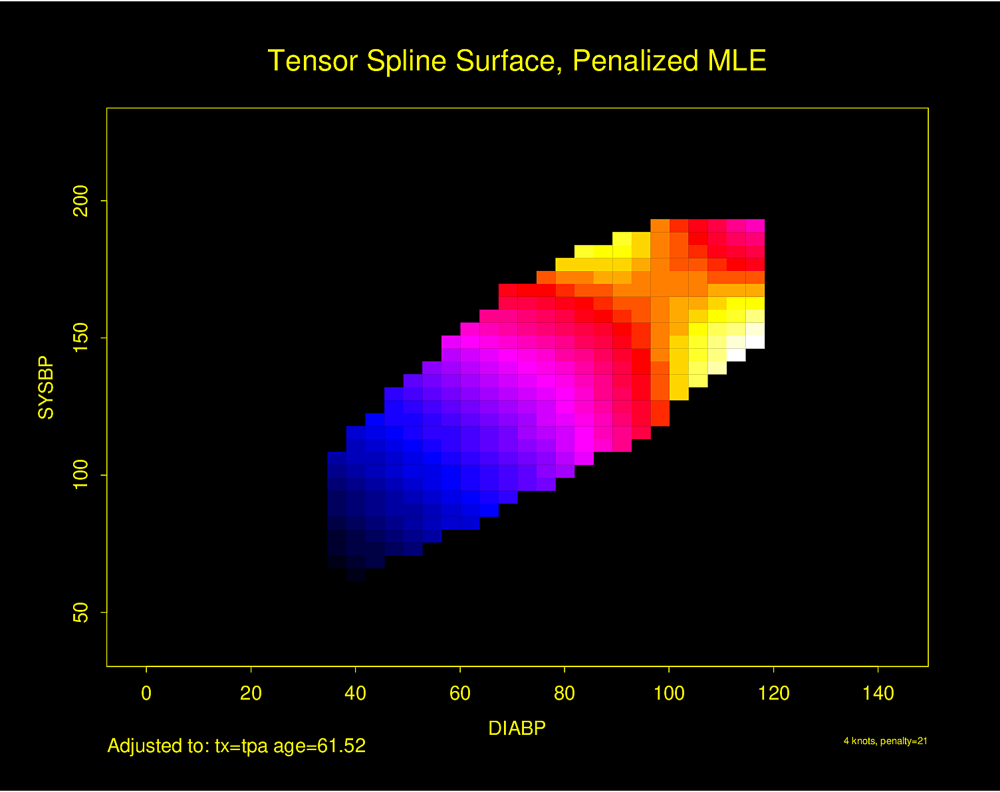

Code
y ~ age + sex + weight + waist + tricepRegression modeling meets many analytic needs:
Simplest example: confidence interval for the slope of a predictor
Confidence intervals for predicted values; simultaneous confidence intervals for a series of predicted values
Alternative: Stratification
Alternative: Single Trees (recursive partitioning/CART)
Alternative: Machine Learning

| Symbol | Meaning |
|---|---|
| \(Y\) | response (dependent) variable |
| \(X\) | \(X_{1},X_{2},\ldots,X_{p}\) – list of predictors |
| \(\beta\) | \(\beta_{0},\beta_{1},\ldots,\beta_{p}\) – regression coefficients |
| \(\beta_0\) | intercept parameter(optional) |
| \(\beta_{1},\ldots,\beta_{p}\) | weights or regression coefficients |
| \(X\beta\) | \(\beta_{0}+\beta_{1}X_{1}+\ldots+\beta_{p}X_{p}, X_{0}=1\) |
Model: connection between \(X\) and \(Y\)
\(C(Y|X)\) : property of distribution of \(Y\) given \(X\), e.g.
\(C(Y|X) = {\rm E}(Y|X)\) or \(\Pr(Y=1|X)\).
General regression model \[C(Y|X) = g(X) .\]
General linear regression model \[C(Y|X) = g(X\beta) .\] Examples
Linearize: \(h(C(Y|X))=X\beta,
h(u)=g^{-1}(u)\)
Example:
General linear regression model:
\(C'(Y|X)=X\beta\).
Suppose that \(X_{j}\) is linear and doesn’t interact with other \(X\)’s1.
1 Note that it is not necessary to “hold constant” all other variables to be able to interpret the effect of one predictor. It is sufficient to hold constant the weighted sum of all the variables other than \(X_{j}\). And in many cases it is not physically possible to hold other variables constant while varying one, e.g., when a model contains \(X\) and \(X^{2}\) (David Hoaglin, personal communication).
Drop \('\) from \(C'\) and assume \(C(Y|X)\) is property of \(Y\) that is linearly related to weighted sum of \(X\)’s.
Nominal (polytomous) factor with \(k\) levels : \(k-1\) indicator variables. E.g. \(T=J,K,L,M\):
\[C(Y|T) = X\beta= \beta_{0}+\beta_{1} X_{1}+\beta_{2} X_{2}+\beta_{3} X_{3},\]
where
\[\begin{array}{ccc} X_{1} = 1 & {\rm if} \ \ T=K, & 0 \ \ {\rm otherwise} \nonumber\\ X_{2} = 1 & {\rm if} \ \ T=L, & 0 \ \ {\rm otherwise} \\ X_{3} = 1 & {\rm if} \ \ T=M, & 0 \ \ {\rm otherwise} \nonumber. \end{array}\]The test for any differences in the property \(C(Y)\) between treatments is \(H_{0}:\beta_{1}=\beta_{2}=\beta_{3}=0\).
\(X_{1}\) and \(X_{2}\), effect of \(X_{1}\) on \(Y\) depends on level of \(X_{2}\). One way to describe interaction is to add \(X_{3}=X_{1}X_{2}\) to model: \[C(Y|X) = \beta_{0}+\beta_{1}X_{1}+\beta_{2}X_{2}+\beta_{3}X_{1}X_{2} .\]
One-unit increase in \(X_{2}\) on \(C(Y|X)\) : \(\beta_{2}+\beta_{3} X_{1}\).
Worse interactions:
If \(X_{1}\) is binary, the interaction may take the form of a difference in shape (and/or distribution) of \(X_{2}\) vs. \(C(Y)\) depending on whether \(X_{1}=0\) or \(X_{1}=1\) (e.g. logarithm vs. square root).
This paper describes how interaction effects can be misleading. See Interaction effects need interaction controls by Uri Simonsohn for an explanation of the possible need for controlling for other interactions when the interest is on a specific interaction.
Postulate the model \(C(Y|age,sex) = \beta_{0}+\beta_{1} age + \beta_{2} [sex=f] + \beta_{3} age [sex=f]\) where \([sex=f]\) is an indicator indicator variable for sex=female, i.e., the reference cell is sex=male2.
2 You can also think of the last part of the model as being \(\beta_{3} X_{3}\), where \(X_{3} = age \times [sex=f]\).
Model assumes
Interpretations of parameters:
| Parameter | Meaning |
|---|---|
| \(\beta_{0}\) | \(C(Y | age=0, sex=m)\) |
| \(\beta_{1}\) | \(C(Y | age=x+1, sex=m) - C(Y | age=x, sex=m)\) |
| \(\beta_{2}\) | \(C(Y | age=0, sex=f) - C(Y | age=0, sex=m)\) |
| \(\beta_{3}\) | \(C(Y | age=x+1, sex=f) - C(Y | age=x, sex=f) -\) |
| \([C(Y | age=x+1, sex=m) - C(Y | age=x, sex=m)]\) |
\(\beta_{3}\) is the difference in slopes (female – male).
When a high-order effect such as an interaction effect is in the model, be sure to interpret low-order effects by finding out what makes the interaction effect ignorable. In our example, the interaction effect is zero when age=0 or sex is male.
Hypotheses that are usually inappropriate:
More useful hypotheses follow. For any hypothesis need to
Most Useful Tests for Linear age \(\times\) sex Model
| Null or Alternative Hypothesis | Mathematical Statement |
|---|---|
| Effect of age is independent of sex or Effect of sex is independent of age or age and sex are additive age effects are parallel |
\(H_{0}: \beta_{3}=0\) |
| age interacts with sex age modifies effect of sex sex modifies effect of age sex and age are non-additive (synergistic) |
\(H_{a}: \beta_{3} \neq 0\) |
| age is not associated with \(Y\) | \(H_{0}: \beta_{1}=\beta_{3}=0\) |
| age is associated with \(Y\) age is associated with \(Y\) for either females or males |
\(H_{a}: \beta_{1} \neq 0 \textrm{~or~} \beta_{3} \neq 0\) |
| sex is not associated with \(Y\) | \(H_{0}: \beta_{2}=\beta_{3}=0\) |
| sex is associated with \(Y\) sex is associated with \(Y\) for some value of age |
\(H_{a}: \beta_{2} \neq 0 \textrm{~or~} \beta_{3} \neq 0\) |
| Neither age nor sex is associated with \(Y\) | \(H_{0}: \beta_{1}=\beta_{2}=\beta_{3}=0\) |
| Either age or sex is associated with \(Y\) | \(H_{a}: \beta_{1} \neq 0 \textrm{~or~} \beta_{2} \neq 0 \textrm{~or~} \beta_{3} \neq 0\) |
Note: The last test is called the global test of no association. If an interaction effect is present, there is both an age and a sex effect. There can also be age or sex effects when the lines are parallel. The global test of association (test of total association) has 3 d.f. instead of 2 (age + sex) because it allows for unequal slopes.
y ~ age + sex + weight + waist + tricepwe may want to jointly test the association between all body measurements and response, holding age and sex constant.
anova(fit, weight, waist, tricep) if fit is a fit object created by the R rms package)Natura non facit saltus
(Nature does not make jumps)
— Gottfried Wilhelm Leibniz

Lucy D’Agostino McGowanRelationships seldom linear except when predicting one variable from itself measured earlier
Categorizing continuous predictors into intervals is a disaster; see Royston et al. (2006), Altman (1991), Hilsenbeck & Clark (1996), Lausen & Schumacher (1996), Altman et al. (1994), Belcher (1992), Faraggi & Simon (1996), Ragland (1992), Suissa & Blais (1995), Buettner et al. (1997), Maxwell & Delaney (1993), Schulgen et al. (1994), Altman (1998), Holländer et al. (2004), Moser & Coombs (2004), Wainer (2006), Fedorov et al. (2009), Giannoni et al. (2014), Collins et al. (2016), Bennette & Vickers (2012) and Biostatistics for Biomedical Research, Chapter 18.
Some problems caused by this approach:
3 If a cutpoint is chosen that minimizes the \(P\)-value and the resulting \(P\)-value is 0.05, the true type I error can easily be above 0.5 Holländer et al. (2004).
Interactive demonstration of power loss of categorization vs. straight line and quadratic fits in OLS, with varying degree of nonlinearity and noise added to \(X\) (must run in RStudio)
Interactive demonstration of lack of fit after categorization of a continuous predictor, and comparison with spline fits, by Stefan Hansen
require(Hmisc)
# Install the manipulate package to make catgNoise work
getRs('catgNoise.r')Example4 of misleading results from creating intervals (here, deciles) of a continuous predictor. Final interval is extremely heterogeneous and is greatly influenced by very large glycohemoglobin values, creating the false impression of an inflection point at 5.9.
4 From NHANES III; Diabetes Care 32:1327-34; 2009 adapted from Diabetes Care 20:1183-1197; 1997.

See this for excellent graphical examples of the harm of categorizing predictors, especially when using quantile groups.
\[C(Y|X_{1}) = \beta_{0}+\beta_{1} X_{1}+\beta_{2} X_{1}^{2} .\]
More generally: \(x\)-axis divided into intervals with endpoints \(a,b,c\) (knots).
\[\begin{array}{ccc} f(X) &=& \beta_{0}+\beta_{1}X+\beta_{2}(X-a)_{+}+\beta_{3}(X-b)_{+} \nonumber\\ &+& \beta_{4}(X-c)_{+} , \end{array}\]where
\[\begin{array}{ccc} (u)_{+}=&u,&u>0 ,\nonumber\\ &0,&u\leq0 . \end{array}\]
\[C(Y|X) = f(X) = X\beta,\] where \(X\beta = \beta_{0}+\beta_{1} X_{1}+\beta_{2} X_{2}+\beta_{3}X_{3}+\beta_{4} X_{4}\), and
\[\begin{array}{cc} X_{1}=X & X_{2} = (X-a)_{+}\nonumber\\ X_{3}=(X-b)_{+} & X_{4} = (X-c)_{+} . \end{array}\]Overall linearity in \(X\) can be tested by testing \(H_{0} : \beta_{2} = \beta_{3} = \beta_{4} = 0\).
Cubic splines are smooth at knots (function, first and second derivatives agree) — can’t see joins.
\(k\) knots \(\rightarrow k+3\) coefficients excluding intercept.
\(X^2\) and \(X^3\) terms must be included to allow nonlinearity when \(X < a\).
stats.stackexchange.com/questions/421964 has some useful descriptions of what happens at the knots, e.g.:
Knots are where different cubic polynomials are joined, and cubic splines force there to be three levels of continuity (the function, its slope, and its acceleration or second derivative (slope of the slope) do not change) at these points. At the knots the jolt (third derivative or rate of change of acceleration) is allowed to change suddenly, meaning the jolt is allowed to be discontinuous at the knots. Between knots, jolt is constant.
The following graphs show the function and its first three derivatives (all further derivatives are zero) for the function given by \(f(x) = x + x^{2} + 2x^{3} + 10(x - 0.25)^{3}_{+} - 50(x - 0.5)^{3}_{+} -100(x - 0.75)^{3}_{+}\) for \(x\) going from 0 to 1, where there are three knots, at \(x=0.25, 0.5, 0.75\).
spar(bty='l', mfrow=c(4,1), bot=-1.5)
x <- seq(0, 1, length=500)
x1 <- pmax(x - .25, 0)
x2 <- pmax(x - .50, 0)
x3 <- pmax(x - .75, 0)
b1 <- 1; b2 <- 1; b3 <- 2; b4 <- 10; b5 <- -50; b6 <- -100
y <- b1 * x + b2 * x^2 + b3 * x^3 + b4 * x1^3 + b5 * x2^3 + b6 * x3^3
y1 <- b1 + 2*b2*x + 3*b3*x^2 + 3*b4*x1^2 + 3*b5*x2^2 + 3*b6*x3^2
y2 <- 2*b2 + 6*b3*x + 6*b4*x1 + 6*b5*x2 + 6*b6*x3
y3 <- 6*b3 + 6*b4*(x1>0)+ 6*b5*(x2>0) + 6*b6*(x3>0)
g <- function() abline(v=(1:3)/4, col=gray(.85))
plot(x, y, type='l', ylab=''); g()
text(0, 1.5, 'Function', adj=0)
plot(x, y1, type='l', ylab=''); g()
text(0, -15, 'First Derivative: Slope\nRate of Change of Function',
adj=0)
plot(x, y2, type='l', ylab=''); g()
text(0, -125, 'Second Derivative: Acceleration\nRate of Change of Slope',
adj=0)
plot(x, y3, type='l', ylab=''); g()
text(0, -400, 'Third Derivative: Jolt\nRate of Change of Acceleration',
adj=0)
Stone & Koo (1985): cubic splines poorly behaved in tails. Constrain function to be linear in tails.
\(k+3 \rightarrow k-1\) parameters Devlin & Weeks (1986).
To force linearity when \(X < a\): \(X^2\) and \(X^3\) terms must be omitted
To force linearity when \(X\) is beyond the last knot: last two \(\beta\) s are redundant, i.e., are just combinations of the other \(\beta\) s.
The restricted spline function with \(k\) knots \(t_{1}, \ldots, t_{k}\) is given by Devlin & Weeks (1986) \[f(X) = \beta_{0}+\beta_{1} X_{1}+\beta_{2} X_{2}+\ldots+\beta_{k-1} X_{k-1},\] where \(X_{1} = X\) and for \(j=1, \ldots, k-2\),
\[\begin{array}{ccc} X_{j+1} &= &(X-t_{j})_{+}^{3}-(X-t_{k-1})_{+}^{3} (t_{k}-t_{j})/(t_{k}-t_{k-1})\nonumber\\ &+&(X-t_{k})_{+}^{3} (t_{k-1}-t_{j})/(t_{k}-t_{k-1}). \end{array} \tag{2.1}\]
\(X_{j}\) is linear in \(X\) for \(X\geq t_{k}\).
For numerical behavior and to put all basis functions for \(X\) on the same scale, R Hmisc and rms package functions by default divide the terms above by \(\tau = (t_{k} - t_{1})^{2}\).
require(Hmisc)
spar(mfrow=c(1,2), left=-2)
x <- rcspline.eval(seq(0,1,.01),
knots=seq(.05,.95,length=5), inclx=T)
xm <- x
xm[xm > .0106] <- NA
matplot(x[,1], xm, type="l", ylim=c(0,.01),
xlab=expression(X), ylab='', lty=1)
matplot(x[,1], x, type="l",
xlab=expression(X), ylab='', lty=1)
spar(left=-2, bot=2, mfrow=c(2,2), ps=13)
x <- seq(0, 1, length=300)
for(nk in 3:6) {
set.seed(nk)
knots <- seq(.05, .95, length=nk)
xx <- rcspline.eval(x, knots=knots, inclx=T)
for(i in 1 : (nk - 1))
xx[,i] <- (xx[,i] - min(xx[,i])) /
(max(xx[,i]) - min(xx[,i]))
for(i in 1 : 20) {
beta <- 2*runif(nk-1) - 1
xbeta <- xx %*% beta + 2 * runif(1) - 1
xbeta <- (xbeta - min(xbeta)) /
(max(xbeta) - min(xbeta))
if(i == 1) {
plot(x, xbeta, type="l", lty=1,
xlab=expression(X), ylab='', bty="l")
title(sub=paste(nk,"knots"), adj=0, cex=.75)
for(j in 1 : nk)
arrows(knots[j], .04, knots[j], -.03,
angle=20, length=.07, lwd=1.5)
}
else lines(x, xbeta, col=i)
}
}
Interactive demonstration of linear and cubic spline fitting, plus ordinary \(4^{th}\) order polynomial. This can be run with RStudio or in an ordinary R session.
require(Hmisc)
getRs('demoSpline.r', put='rstudio') # to see code in RStudio window
getRs('demoSpline.r') # to just run the codePaul Lambert’s excellent self-contained interactive demonstrations of continuity restrictions, cubic polynomial, linear spline, cubic spline, and restricted cubic spline fitting is at pclambert.net/interactive_graphs. Jordan Gauthier has another nice interactive demonstration at drjgauthier.shinyapps.io/spliny.
Once \(\beta_{0}, \ldots, \beta_{k-1}\) are estimated, the restricted cubic spline can be restated in the form
\[\begin{array}{ccc} f(X) &=& \beta_{0}+\beta_{1}X+\beta_{2}(X-t_{1})_{+}^{3}+\beta_{3}(X-t_{2})_{+}^{3}\nonumber\\ && +\ldots+ \beta_{k+1}(X-t_{k})_{+}^{3} \end{array} \tag{2.2}\]
by dividing \(\beta_{2},\ldots,\beta_{k-1}\) by \(\tau\) and computing
\[\begin{array}{ccc} \beta_{k} &=& [\beta_{2}(t_{1}-t_{k})+\beta_{3}(t_{2}-t_{k})+\ldots\nonumber\\ && +\beta_{k-1}(t_{k-2}-t_{k})]/(t_{k}-t_{k-1})\nonumber\\ \beta_{k+1} &= & [\beta_{2}(t_{1}-t_{k-1})+\beta_{3}(t_{2}-t_{k-1})+\ldots\\ && + \beta_{k-1}(t_{k-2}-t_{k-1})]/(t_{k-1}-t_{k})\nonumber . \end{array}\]A test of linearity in X can be obtained by testing
\[H_{0} : \beta_{2} = \beta_{3} = \ldots = \beta_{k-1} = 0.\]
Example: Selvin et al. (2010)

| 3 | .10 | .5 | .90 | |||||
| 4 | .05 | .35 | .65 | .95 | ||||
| 5 | .05 | .275 | .5 | .725 | .95 | |||
| 6 | .05 | .23 | .41 | .59 | .77 | .95 | ||
| 7 | .025 | .1833 | .3417 | .5 | .6583 | .8167 | .975 |
\(n<100\) – replace outer quantiles with 5th smallest and 5th largest \(X\) (Stone & Koo (1985)).
Choice of \(k\):
See Govindarajulu et al. (2007) for a comparison of restricted cubic splines, fractional polynomials, and penalized splines.
| \(X\): | 1 | 2 | 3 | 5 | 8 |
|---|---|---|---|---|---|
| \(Y\): | 2.1 | 3.8 | 5.7 | 11.1 | 17.2 |
5 Weight here means something different than regression coefficient. It means how much a point is emphasized in developing the regression coefficients.
6 These place knots at all the observed data points but penalize coefficient estimates towards smoothness.
Regression splines have several advantages (Harrell et al. (1988)):
Breiman et al. (1984): CART (Classification and Regression Trees) — essentially model-free
Method:
Advantages/disadvantages of recursive partitioning:
See Austin et al. (2010).
The approaches recommended in this course are
The data reduction approach can yield very interpretable, stable models, but there are many decisions to be made when using a two-stage (reduction/model fitting) approach, Newer approaches are evolving, including the following. These new approach handle continuous predictors well, unlike recursive partitioning.
One problem prevents most of these methods from being ready for everyday use: they require scaling predictors before fitting the model. When a predictor is represented by nonlinear basis functions, the scaling recommendations in the literature are not sensible. There are also computational issues and difficulties obtaining hypothesis tests and confidence intervals.
When data reduction is not required, generalized additive models Hastie & Tibshirani (1990), Wood (2006) should also be considered.
Considerations in Choosing One Approach over Another
A statistical model may be the better choice if
Machine learning may be the better choice if
But see this for navigating resources exposing problems in ML applications such as the following:
\[C(Y|X) = \beta_{0}+\beta_{1}X_{1}+\beta_{2}X_{2}+\beta_{3}X_{2}^{2} ,\] \(H_{0}: \beta_{2}=\beta_{3}=0\) with 2 d.f. to assess association between \(X_{2}\) and outcome.
In the 5-knot restricted cubic spline model \[C(Y|X) = \beta_{0}+\beta_{1}X+\beta_{2}X'+\beta_{3}X''+\beta_{4}X''' ,\] \(H_{0}: \beta_{1}=\ldots=\beta_{4}=0\)
Grambsch & O’Brien (1991) elegantly described the hazards of pretesting
The general linear regression model is \[C(Y|X) = X\beta =\beta_{0}+\beta_{1}X_{1}+\beta_{2}X_{2}+\ldots+\beta_{k}X_{k} .\] Verify linearity and additivity. Special case: \[C(Y|X) = \beta_{0}+\beta_{1}X_{1}+\beta_{2}X_{2},\] where \(X_{1}\) is binary and \(X_{2}\) is continuous.

Methods for checking fit:
1. Fit simple linear additive model and check examine residual plots for patterns
qqnorm plots of overall and stratified residualsAdvantage: Simplicity
Disadvantages:
2. Scatterplot of \(Y\) vs. \(X_{2}\) using different symbols according to values of \(X_{1}\)
Advantages: Simplicity, can see interaction
Disadvantages:
3. Stratify the sample by \(X_{1}\) and quantile groups (e.g. deciles) of \(X_{2}\); estimate \(C(Y|X_{1},X_{2})\) for each stratum
Advantages: Simplicity, can see interactions, handles censored \(Y\) (if you are careful)
Disadvantages:
4. Separately for levels of \(X_{1}\) fit a nonparametric smoother relating \(X_{2}\) to \(Y\)
Advantages: All regression aspects of the model can be summarized efficiently with minimal assumptions
Disadvantages:
5. Fit flexible nonlinear parametric model
Advantages:
Disadvantages:
Confidence limits, formal inference can be problematic for methods 1-4.
Restricted cubic spline works well for method 5.
\[\begin{array}{ccc} \hat{C}(Y|X) &=& \hat{\beta}_{0}+\hat{\beta}_{1}X_{1}+\hat{\beta}_{2}X_{2}+\hat{\beta}_{3}X_{2}'+\hat{\beta}_{4}X_{2}'' \nonumber\\ &=& \hat{\beta}_{0}+\hat{\beta}_{1}X_{1}+\hat{f}(X_{2}) , \end{array}\]where \[\hat{f}(X_{2}) = \hat{\beta}_{2}X_{2}+\hat{\beta}_{3}X_{2}'+\hat{\beta}_{4}X_{2}'' ,\] \(\hat{f}(X_{2})\) spline-estimated transformation of \(X_{2}\).
Overall test of linearity \(H_{0}: \beta_{3}=\beta_{4}=\beta_{6}=\beta_{7}=0\), with 4 d.f.
Note: Interactions will be misleading if main effects are not properly modeled (M. Zhang et al. (2020)).
Suppose \(X_1\) binary or linear, \(X_2\) continuous:
Simultaneous test of linearity and additivity: \(H_{0}: \beta_{3} = \ldots = \beta_{7} = 0\).
\[\begin{array}{ccc} C(Y|X) & = & \beta_{0}+\beta_{1}X_{1}+\beta_{2}X_{1}'+\beta_{3}X_{1}'' \nonumber\\ &+& \beta_{4}X_{2}+\beta_{5}X_{2}'+\beta_{6}X_{2}'' \nonumber\\ &+& \beta_{7}X_{1}X_{2}+\beta_{8}X_{1}X_{2}'+\beta_{9}X_{1}X_{2}'' \\ &+& \beta_{10}X_{2}X_{1}'+\beta_{11}X_{2}X_{1}'' \nonumber \end{array} \tag{2.3}\]
General spline surface:

Figure fig-gen-image-stroke is particularly interesting because the literature had suggested (based on approximately 24 strokes) that pulse pressure was the main cause of hemorrhagic stroke whereas this flexible modeling approach (based on approximately 230 strokes) suggests that mean arterial blood pressure (roughly a \(45^\circ\) line) is what is most important over a broad range of blood pressures. At the far right one can see that pulse pressure (axis perpendicular to \(45^\circ\) line) may have an impact although a non-monotonic one.
Other issues:
Some types of interactions to pre-specify in clinical studies:
The last example is worth expanding as an example in model formulation. Consider the following study.
B7age and sexR rms package to fit a Cox proportional hazards modelsampleAge tests the adequacy of assuming a plain logarithmic trend in sample age7 For continuous \(Y\) one might need to model the residual variance of \(Y\) as increasing with sample age, in addition to modeling the mean function.
f <- cph(Surv(etime, event) ~ rcs(log(sampleAge), 3) * rcs(B, 4) +
rcs(age, 5) * sex, data=mydata)The B \(\times\) sampleAge interaction effects have 6 d.f. and tests whether the sample deterioration affects the effect of B. By not assuming that B has the same effect for old samples as for young samples, the investigator will be able to estimate the effect of B on outcome when the blood analysis is ideal by inserting sampleAge = 1 day when requesting predicted values as a function of B.
R ordSmooth package) or Bayesian shrinkage (R brms package).rms package gTrans function documented at hbiostat.org/R/rms/gtrans.htmlgTrans but harder to plot predicted values, get contrasts, and get chunk testsrequire(rms) # engages rms which also engages Hmisc which provides getHdata
options(prType='html') # applies to printing model fits
getHdata(sicily) # fetch dataset from hbiostat.org/data
d <- sicily
dd <- datadist(d); options(datadist='dd')Start with a standard restricted cubic spline fit, 6 knots at default quantile locations. From the fitted Poisson model we estimate the number of cases per a constant population size of 100,000.
require(ggplot2)
g <- function(x) exp(x) * 100000
off <- list(stdpop=mean(d$stdpop)) # offset for prediction (383464.4)
w <- geom_point(aes(x=time, y=rate), data=d)
v <- geom_vline(aes(xintercept=37, col=I('red')))
yl <- ylab('Acute Coronary Cases Per 100,000')
f <- Glm(aces ~ offset(log(stdpop)) + rcs(time, 6),
data=d, family='poisson')
f$aic[1] 721.5237ggplot(Predict(f, fun=g, offset=off)) + w + v + yl
# Save knot locations
k <- attr(rcs(d$time, 6), 'parms')
k[1] 5.00 14.34 24.78 35.22 45.66 55.00kn <- k
# rcspline.eval is the rcs workhorse
h <- function(x) cbind(rcspline.eval(x, kn),
sin=sin(2*pi*x/12), cos=cos(2*pi*x/12))
f <- Glm(aces ~ offset(log(stdpop)) + gTrans(time, h),
data=d, family='poisson')
f$aic[1] 674.112ggplot(Predict(f, fun=g, offset=off)) + w + v + yl
Next add more knots near intervention to allow for sudden change
kn <- sort(c(k, c(36, 37, 38)))
f <- Glm(aces ~ offset(log(stdpop)) + gTrans(time, h),
data=d, family='poisson')
f$aic[1] 661.7904ggplot(Predict(f, fun=g, offset=off)) + w + v + yl
Now make the slow trend simpler (6 knots) but add a discontinuity at the intervention. More finely control times at which predictions are requested, to handle discontinuity.
h <- function(x) {
z <- cbind(rcspline.eval(x, k),
sin=sin(2*pi*x/12), cos=cos(2*pi*x/12),
jump=x >= 37)
attr(z, 'nonlinear') <- 2 : ncol(z)
z
}
f <- Glm(aces ~ offset(log(stdpop)) + gTrans(time, h),
data=d, family='poisson', x=TRUE, y=TRUE) # x, y for LRTs
f$aic[1] 659.6044times <- sort(c(seq(0, 60, length=200), 36.999, 37, 37.001))
ggplot(Predict(f, time=times, fun=g, offset=off)) + w + v + yl
Look at fit statistics especially evidence for the jump
fGeneral Linear Model
Glm(formula = aces ~ offset(log(stdpop)) + gTrans(time, h), family = "poisson",
data = d, x = TRUE, y = TRUE)
| Model Likelihood Ratio Test |
|
|---|---|
| Obs 59 | LR χ2 169.64 |
| Residual d.f. 51 | d.f. 7 |
| g 0.080 | Pr(>χ2) <0.0001 |
| β | S.E. | Wald Z | Pr(>|Z|) | |
|---|---|---|---|---|
| Intercept | -6.2118 | 0.0095 | -656.01 | <0.0001 |
| time | 0.0635 | 0.0113 | 5.63 | <0.0001 |
| time' | -0.1912 | 0.0433 | -4.41 | <0.0001 |
| time'' | 0.2653 | 0.0760 | 3.49 | 0.0005 |
| time''' | -0.2409 | 0.0925 | -2.61 | 0.0092 |
| sin | 0.0343 | 0.0067 | 5.11 | <0.0001 |
| cos | 0.0380 | 0.0065 | 5.86 | <0.0001 |
| jump | -0.1268 | 0.0313 | -4.06 | <0.0001 |
Compute likelihood ratio \(\chi^2\) test statistics for this model
anova(f, test='LR')Likelihood Ratio Statistics for aces |
|||
| χ2 | d.f. | P | |
|---|---|---|---|
| time | 169.64 | 7 | <0.0001 |
| Nonlinear | 127.03 | 6 | <0.0001 |
| TOTAL | 169.64 | 7 | <0.0001 |
Get a joint LR test of seasonality and discontinuity by omitting 3 terms from the model
g <- Glm(aces ~ offset(log(stdpop)) + rcs(time, k),
data=d, family='poisson')
lrtest(f, g)
Model 1: aces ~ offset(log(stdpop)) + gTrans(time, h)
Model 2: aces ~ offset(log(stdpop)) + rcs(time, k)
L.R. Chisq d.f. P
6.591931e+01 2.000000e+00 4.884981e-15 Contrasts allow one to estimate and test any kind of effects that are napped to the model’s regression parameters. Examples in sec-genreg-prior show how far you can take this idea, including double difference contrasts for estimating interaction effects or degree of nonlinearity. The rms package contrast.rms function makes it easy to estimate contrasts to get estimates such as the effect of age changing from 30 to 50 for males. Contrasts are just differences in predicted values, so all that’s needed is to specify the design matrices for one condition vs. another and to subtract these two matrices and multiply this difference by \(\hat{\beta}\). A standard formula is used to compute standard errors of such contrasts which leads to Wald confidence intervals.
Since Wald confidence intervals for contrasts are so easy to compute, it is tempting to always compute contrasts in an after-fitting step. This is optimal for bootstrapping, or for Bayesian models where the contrast is computed separately for each posterior draw, leading to posterior samples of the contrasts, which are summarized exactly as basic parameters are summarized (posterior median, highest posterior density uncertainty interval, etc.). But in a frequentist setting outside of a standard Gaussian linear model, Wald confidence intervals are not ideal. For example the sampling distribution of the contrast may be asymmetric, so symmetric confidence intervals may have poor coverage on at least one side. In addition, Wald confidence intervals may inconsistent with gold-standard likelihood ratio \(\chi^2\) tests, whereas profile likelihood confidence intervals are consistent with them.
To compute profile likelihood confidence intervals on a contrast, one must reparameterize the model with \(p\) parameters so that the contrast is represented by a single variable, with the model’s \(p-1\) parameters reparameterized so that the contrast and the \(p-1\) parameters span the same space as the original model. This allows profile likelihood algorithms to fix the contrast “parameter” at a given constant \(c\), compute maximum likelihood estimates of the remaining new parameters, and repeat this process many times to solve for the two values of \(c\) such that the interval between them is the set of values that if hyothesized to be true would not lead to rejection of the null using the likelihood ratio \(\chi^2\) test.
How does one derive the “contrast variable” and the remaining \(p-1\) variables? How can the contrast variable be constructed so that its estimated regression coefficient is exactly equal to the estimated contrast? This is a useful exercise in understanding regression model algebra even if not using profile likelihoods.
Consider a very simple case where the model is \(E(Y | X=x) = \beta_{0} + \beta_{1}x_{1} + \beta_{2}x_{2} = f(x_1, x_2)\), where the vector \(x\) is \([x_1, x_2]\). Suppose the contrast of interest is just \(\beta_1\), i.e., the contrast is \(f(1, a) - f(0, a)\). The setting for \(x_2\), \(a\), is irrelevant and will cancel out since \(x_1\) and \(x_2\) do not interact. Se we are not reparameterizing the model; the matrix multiplication that translates from the original \(x\) space to the new space involves a \(2\times 2\) identity matrix, and one fits the model with the original \(x\) values to get the contrast of interest as the \(\hat{\beta_1}\).
Next consider a more meaningful case there the contrast of interest is \(\beta_1 - \beta_2\). Intuition tells us that the rephrasing of parameters needed for the model’s second variable is \(\beta_1 + \beta_2\) which is orthogonal to the first combination. Let’s use a general procedure to derive this second parameter. If we augment the first new parameter with the identity matrix that represents the original model, a singular value decomposition will yield the second variable that will make the modified model span the same space as the original. The R code below demonstrates this.
p <- 2 # number of non-intercept parameters
D <- c(1, -1) # contrast of interest
C <- rbind(D, diag(p)) # diag(p) is 2x2 identity matrix
C [,1] [,2]
D 1 -1
1 0
0 1s <- svd(C)
s$d
[1] 1.732051 1.000000
$u
[,1] [,2]
[1,] -0.8164966 1.855775e-16
[2,] -0.4082483 -7.071068e-01
[3,] 0.4082483 -7.071068e-01
$v
[,1] [,2]
[1,] -0.7071068 -0.7071068
[2,] 0.7071068 -0.7071068v <- s$v[, 2 : p, drop=FALSE]
v [,1]
[1,] -0.7071068
[2,] -0.7071068The coefficients of \(x_1\) and \(x_2\) in v are the same, so the second parameter is associated with the sum of \(x_1\) and \(x_2\), with an arbitrary scaling constant.
Now consider a more interested case. A model has a predictor \(x\) that is modeled with an ordinary cubic polynomial plus a discontinuity at \(x=3\) and includes another covariate \(z\):
\[ \begin{aligned} E(Y | x, z) = f(x, z) &= \beta_0 + \beta_1 x + \beta_2 x^2 + \beta_3 x^3 \\ &+ \beta_4 [x > 3] + \beta_5 z \end{aligned} \]
Here \([s]\) is a 0/1 indicator variable for the truth of assertion \(s\). Our contrast of interest is \(f(3, a) - f(1, a)\) which is \(2\beta_1 + 8\beta_2 + 26\beta_3\). \(a\) cancels out and \(\beta_4\) is not involved either since \(x \leq 3\) for both contrast predictor settings. We need to create a new variable \(u\) that, when adjusted for the correct parameterization of the other variables, will result in a regression coefficient that is exactly \(2\beta_1 + 8\beta_2 + 26\beta_3\) in the original \(\beta\)s. Try \(u = (\frac{x}{2} + \frac{x^2}{8} + \frac{x^3}{26}) / 3\). Simulate some data and use the singular value decomposition to solve for the matrix to multiply the design matrix by to reparameterize the other parts of the model. Below xc (x contrast variable) is \(u\).
set.seed(1)
n <- 100; b0=3; b1=1; b2=.2; b3=.05; b4=1; b5=2
x <- 2 * rnorm(n)
z <- rnorm(n)
res <- 2 * rnorm(n)
d <- data.frame(x, z)
dd <- datadist(d); options(datadist='dd')
y <- b0 + b1*x + b2*x^2 + b3*x^3 + b4*(x > 3) + b5*z + res
# Form a general transformation function fo x
g <- function(x) cbind(x=x, x2=x^2, x3=x^3, x4=x > 3)
f <- orm(y ~ gTrans(x, g) + z, x=TRUE, y=TRUE)
fLogistic (Proportional Odds) Ordinal Regression Model
orm(formula = y ~ gTrans(x, g) + z, x = TRUE, y = TRUE)
| Model Likelihood Ratio Test |
Discrimination Indexes |
Rank Discrim. Indexes |
|
|---|---|---|---|
| Obs 100 | LR χ2 149.06 | R2 0.775 | ρ 0.833 |
| ESS 100 | d.f. 5 | R25,100 0.763 | Dxy 0.651 |
| Distinct Y 100 | Pr(>χ2) <0.0001 | R25,100 0.763 | |
| Y0.5 3.747608 | Score χ2 245.33 | |Pr(Y ≥ median)-½| 0.333 | |
| max |∂log L/∂β| 9×10-13 | Pr(>χ2) <0.0001 |
| β | S.E. | Wald Z | Pr(>|Z|) | |
|---|---|---|---|---|
| x | 0.4238 | 0.2150 | 1.97 | 0.0487 |
| x2 | 0.2207 | 0.0800 | 2.76 | 0.0058 |
| x3 | 0.1179 | 0.0304 | 3.88 | 0.0001 |
| x4 | 1.6193 | 1.7626 | 0.92 | 0.3583 |
| z | 1.7016 | 0.2337 | 7.28 | <0.0001 |
# For the contrast matrix setting z arbitrarily to pi
X1 <- predict(f, data.frame(x=1, z=pi), type='x')
X2 <- predict(f, data.frame(x=3, z=pi), type='x')
rbind(X1, X2) gTrans(x, g)x gTrans(x, g)x2 gTrans(x, g)x3 gTrans(x, g)x4 z
1 1 1 1 0 3.141593
1 3 9 27 0 3.141593D <- X2 - X1
D gTrans(x, g)x gTrans(x, g)x2 gTrans(x, g)x3 gTrans(x, g)x4 z
1 2 8 26 0 0D %*% coef(f)[- (1 : num.intercepts(f))] [,1]
1 5.678912p <- ncol(D)
C <- rbind(D, diag(p)); C gTrans(x, g)x gTrans(x, g)x2 gTrans(x, g)x3 gTrans(x, g)x4 z
1 2 8 26 0 0
1 0 0 0 0
0 1 0 0 0
0 0 1 0 0
0 0 0 1 0
0 0 0 0 1s <- svd(C); s$d
[1] 27.29469 1.00000 1.00000 1.00000 1.00000
$u
[,1] [,2] [,3] [,4] [,5]
[1,] 0.999328634 -3.097952e-18 0 0 -1.260631e-16
[2,] 0.002686367 6.195905e-18 0 0 9.973082e-01
[3,] 0.010745469 -9.557790e-01 0 0 -2.156342e-02
[4,] 0.034922775 2.940858e-01 0 0 -7.008112e-02
[5,] 0.000000000 0.000000e+00 -1 0 0.000000e+00
[6,] 0.000000000 0.000000e+00 0 -1 0.000000e+00
$v
[,1] [,2] [,3] [,4] [,5]
[1,] 0.07332356 0.0000000 0 0 0.99730821
[2,] 0.29329423 -0.9557790 0 0 -0.02156342
[3,] 0.95320625 0.2940858 0 0 -0.07008112
[4,] 0.00000000 0.0000000 -1 0 0.00000000
[5,] 0.00000000 0.0000000 0 -1 0.00000000# Need to account for a scaling constant used in SVD
v <- s$v * sqrt(sum(D ^ 2))
v [,1] [,2] [,3] [,4] [,5]
[1,] 2 0.000000 0.00000 0.00000 27.2029410
[2,] 8 -26.070176 0.00000 0.00000 -0.5881717
[3,] 26 8.021592 0.00000 0.00000 -1.9115580
[4,] 0 0.000000 -27.27636 0.00000 0.0000000
[5,] 0 0.000000 0.00000 -27.27636 0.0000000v <- s$v / sqrt(sum(D ^ 2)) # do the reverse when solving for x
v [,1] [,2] [,3] [,4] [,5]
[1,] 0.002688172 0.00000000 0.00000000 0.00000000 0.0365630928
[2,] 0.010752688 -0.03504056 0.00000000 0.00000000 -0.0007905534
[3,] 0.034946237 0.01078171 0.00000000 0.00000000 -0.0025692984
[4,] 0.000000000 0.00000000 -0.03666178 0.00000000 0.0000000000
[5,] 0.000000000 0.00000000 0.00000000 -0.03666178 0.0000000000# Get original design matrix and rotate it
# Contrast of interest is in the 1st column, all other columns
# are orthogonal to that
X <- f$x
Z <- X %*% v
orm(y ~ Z)Logistic (Proportional Odds) Ordinal Regression Model
orm(formula = y ~ Z)
| Model Likelihood Ratio Test |
Discrimination Indexes |
Rank Discrim. Indexes |
|
|---|---|---|---|
| Obs 100 | LR χ2 149.06 | R2 0.775 | ρ 0.833 |
| ESS 100 | d.f. 5 | R25,100 0.763 | Dxy 0.651 |
| Distinct Y 100 | Pr(>χ2) <0.0001 | R25,100 0.763 | |
| Y0.5 3.747608 | Score χ2 245.33 | |Pr(Y ≥ median)-½| 0.333 | |
| max |∂log L/∂β| 4×10-13 | Pr(>χ2) <0.0001 |
| β | S.E. | Wald Z | Pr(>|Z|) | |
|---|---|---|---|---|
| Z[1] | 5.6789 | 1.0985 | 5.17 | <0.0001 |
| Z[2] | -4.8087 | 1.9667 | -2.45 | 0.0145 |
| Z[3] | -44.1680 | 48.0777 | -0.92 | 0.3583 |
| Z[4] | -46.4143 | 6.3740 | -7.28 | <0.0001 |
| Z[5] | 11.1745 | 5.8960 | 1.90 | 0.0581 |
Compute the contrast on the original variables and compare to the coefficient of xc.
k <- contrast(f, list(x=3), list(x=1))
k z Contrast S.E. Lower Upper Z Pr(>|z|)
1 -0.1772172 5.678912 1.098531 3.525831 7.831994 5.17 0
Confidence intervals are 0.95 individual intervalsp <- Predict(f, x=c(1,3))
diff(p$yhat)[1] 5.678912Repeat using the more accurate profile likelihood method, which makes use of the singular value decomposition like the one above.
contrast(f, list(x=3), list(x=1), conf.type='profile') z Contrast Lower Upper Χ² Pr(>Χ²)
1 -0.1772172 5.678912 3.626648 7.9426 36.37 0
Confidence intervals are 0.95 profile likelihood intervalsNote that singular value decompositions have arbitrary signs. The contrast function does any needed sign reversal so that the contrast matches the original one.
There are many advantages to fitting models with a Bayesian approach when compared to the frequentist / maximum likelihood approach that receives more coverage in this text. These advantages include
As seen in example output form the blrm function below, one can automatically obtain highest posterior density uncertainty intervals for any parameter including overall model performance metrics. These are derived from the \(m\) posterior draws of the model’s parameters by computing the model performance metric for each draw. The uncertainties captured by this process relate to the ability to well-estimate model parameters, which relates also to within-training-sample model fit. So the uncertainties reflect a similar phenomenon to what \(R^{2}_\text{adj}\) measures. Adjusted \(R^2\) other than McFadden’s penalize for \(p\), the number of regression parameters estimated, other than the intercept. This is very similar to considering likelihood ratio \(\chi^2\) statistics minus the number of degrees of freedom involved in the LR test. On the other hand, AIC approximates out-of-sample model performance by using a penalty of twice the degrees of freedom (like the seldom-used McFadden \(R^{2}_\text{adj}\))
So uncertainties computed by the blrm function come solely from the spread of the posterior distributions, i.e., the inability of the analysis to precisely estimate the unknown parameters. They condition on the observed design matrix \(X\) and do not consider other samples as would be done with out-of-sample predictive accuracy assessment with AIC, the bootstrap, or cross-validation.
When \(p=1\) a rank measure of predictive discrimination such as \(D_{xy}\) will have no uncertainty unless the sign of the one regression coefficient often flips over posterior draws.
A major part of the arsenal of Bayesian modeling weapons is Stan based at Columbia University. Very general R statistical modeling packages such as brms and rstanarm are based on Stan.
RMS has several fully worked-out Bayesian modeling case studies. The purpose of the remainder of this chapter is to show the power of Bayes in general regression modeling.
With a Bayesian approach one can include a parameter for each aspect of the model you know exists but are unsure about. This leads to results that are not overly optimistic, because uncertainty intervals will be a little wider to acknowledge what you don’t know. A good example is the Bayesian \(t\)-test, which has a parameter for the amount of non-normality and a parameter for how unequal the variances may be in the two groups being compared. Prior distributions can favor normality and equal variance, and modeling becomes more flexible as \(n \uparrow\).
Other examples of borrowing information and adding flexibility:
Interactions bring special problems to estimation and inference. In the best of cases, an interaction requires \(4 \times\) larger sample size to estimate and may require \(16 \times\) the sample size to achieve the same power as a main effect test. We need a way to borrow information, essentially having an interaction term “half in” and “half out” of the model. This has been elegantly described by R. Simon & Freedman (1997) who show how to put priors on interaction terms. Using a Bayesian approach to have an interaction “half in” the model is a much more rational approach than prevailing approaches that
To gain the advantages of Bayesian modeling described above, doing away with binary decisions and allowing the use of outside information, one must specify prior distributions for parameters. It is often difficult to do this, especially when there are nonlinear effects (e.g., splines) and interactions in the model. We need a way to specify priors on the original \(X\) and \(Y\) scales. Fortunately Stan provides an elegant solution.
As discussed here Stan allows one to specify priors on transformations of model parameters, and these priors propagate back to the original parameters. It is easier to specify a prior for the effect of increasing age from 30 to 60 that it is to specify a prior for the age slope. It may be difficult to specify a prior for an age \(\times\) treatment interaction (especially when the age effect is nonlinear), but much easier to specify a prior for how different the treatment effect is for a 30 year old and a 60 year old. By specifying priors on one or more contrasts one can easily encode outside information / information borrowing / shrinkage.
The rms contrast function provides a general way to implement contrasts up to double differences, and more details about computations are provided in that link. The approach used for specifying priors for contrast in rmsb::blrm uses the same process but is even more general. Both contrast and blrm compute design matrices at user-specified predictor settings, and the contrast matrices (matrices multipled by \(\hat{\beta}\)) are simply differences in such design matrices. Thinking of contrasts as differences in predicted values frees the user from having to care about how parameters map to estimands, and allows an R predict(fit, type='x') function do the hard work. Examples of types of differences are below.
rmsb implements priors on contrasts starting with version 1.0-0.blrm for priors)For predictors modeled linearly, the slope is the regression coefficient. For nonlinear effects where \(x\) is transformed by \(f(x)\), the slope at \(x=\frac{a+b}{2}\) is proportionally approximated by \(f(b) - f(a)\), and the slope at \(x=\frac{b+c}{2}\) by \(f(c) - f(b)\). The amount of nonlinearity is reflected by the difference in the two slopes, or \(f(c) - f(b) -[f(b) - f(a)] = f(a) + f(c) - 2f(b)\). You’ll see this form specified in the contrast part of the pcontrast argument to blrm below.
Semiparametic models are introduced in sec-ordinal but we will use one of the models—the proportional odds (PO) ordinal logistic model—in showcasing the utility of specifying priors on contrasts in order to use external information or to place restrictions on model fits. The blrm function in the rmsb package implements this semiparametric model using Stan. Because it does not depend on knowing how to transform \(Y\), I almost always use the more robust ordinal models instead of linear models. The linear predictor \(X\beta\) is on the logit (log odds) scale for the PO model. This unitless scale typically ranges from -5 to 5, corresponding to a range of probabilities of 0.007 to 0.993. Default plotting uses the intercept corresponding to the marginal median of \(Y\), so the log odds of the probability that \(Y\) exceeds or equals this level, given \(X\), is plotted. Estimates can be converted to means, quantiles, or exceedance probabilities using the Mean, Quantile, and ExProb functions in the rms and rmsb packages.
Effects for the PO model are usually expressed as odds ratios (OR). For the case where the prior median for the OR is 1.0 (prior mean or median log(OR)=0.0) it is useful to solve for the prior SD \(\sigma\) so that \(\Pr(\text{OR} > r) = a = \Pr(\text{OR} < \frac{1}{r})\), leading to \(a = \frac{|\log(r)|}{\Phi^{-1}(1-a)}\), computed by the psigma function below. Another function . is defined as an abbreviation for list() for later usage.
psigma <- function(r, a, inline=FALSE, pr=! inline) {
sigma <- abs(log(r)) / qnorm(1 - a)
dir <- if(r > 1.) '>' else '<'
x <- if(inline) paste0('$\\Pr(\\text{OR}', dir, r, ') =', a,
' \\Rightarrow \\sigma=', round(sigma, 3), '$')
else paste0('Pr(OR ', dir, ' ', r, ') = ', a, ' ⇒ σ=', round(sigma, 3))
if(inline) return(x)
if(pr) {
cat('\n', x, '\n\n', sep='')
return(invisible(sigma))
}
sigma
}
. <- function(...) list(...)Start with a simple hypothetical example:
We wish to specify a prior on the treatment effect at age 50 so that there is only a 0.05 chance that the \(\text{OR} < 0.5\). \(\Pr(\text{OR}<0.5) =0.05 \Rightarrow \sigma=0.421\). The covariate settings specified in pcontrast below do not mention sex, so predictions are evaluated at the default sex (the mode). Since sex does not interact with anything, the treatment difference of interest makes the sex setting irrelevant anyway.
require(rmsb)
f <- blrm(y ~ treatment * pol(age, 2) + sex,
pcontrast=list(sd=psigma(0.5, 0.05),
c1=.(treatment='B', age=50), # .() = list()
c2=.(treatment='A', age=50),
contrast=expression(c1 - c2) ) )Note that the notation needed for pcontrast need not consider how age is modeled.
Consider a more complicated situation. Let’s simulate data for one continuous predictor where the true model is a sine wave. The response variable is a slightly rounded version of a conditionally normal \(Y\).
require(rmsb)
require(ggplot2)
options(mc.cores=4, # See https://hbiostat.org/r/examples/blrm/blrm
rmsb.backend='cmdstan', rmsbdir='~/.rmsb',
prType='html')
cmdstanr::set_cmdstan_path(cmdstan.loc)
# cmdstan.loc is defined in ~/.Rprofile
set.seed(3)
n <- 200
x <- rnorm(n)
y <- round(sin(2*x) + rnorm(n), 1)
dd <- datadist(x, q.display=c(.005, .995)); options(datadist='dd')
f <- blrm(y ~ rcs(x, 6))Running MCMC with 4 parallel chains...
Chain 1 finished in 1.1 seconds.
Chain 2 finished in 1.1 seconds.
Chain 3 finished in 1.1 seconds.
Chain 4 finished in 1.1 seconds.
All 4 chains finished successfully.
Mean chain execution time: 1.1 seconds.
Total execution time: 1.3 seconds.fBayesian Proportional Odds Ordinal Logistic Model
Dirichlet Priors With Concentration Parameter 0.052 for Intercepts
blrm(formula = y ~ rcs(x, 6))
| Mixed Calibration/ Discrimination Indexes |
Discrimination Indexes |
Rank Discrim. Indexes |
|
|---|---|---|---|
| Obs 200 | LOO log L -784.58±14.27 | g 1.408 [1.122, 1.724] | C 0.699 [0.689, 0.704] |
| Draws 4000 | LOO IC 1569.17±28.54 | gp 0.294 [0.246, 0.337] | Dxy 0.397 [0.378, 0.408] |
| Chains 4 | Effective p 75.53±6.39 | EV 0.275 [0.19, 0.364] | |
| Time 1.9s | B 0.197 [0.193, 0.203] | v 1.562 [0.87, 2.195] | |
| p 5 | vp 0.068 [0.048, 0.091] |
| Mode β | Mean β | Median β | S.E. | Lower | Upper | Pr(β>0) | Symmetry | |
|---|---|---|---|---|---|---|---|---|
| x | -3.1231 | -3.0875 | -3.0993 | 0.7868 | -4.5816 | -1.5200 | 0.0003 | 1.04 |
| x' | 17.0447 | 16.7737 | 16.6810 | 7.9381 | 1.3943 | 31.8894 | 0.9838 | 1.01 |
| x'' | -20.1489 | -19.1846 | -19.3400 | 37.7108 | -93.7203 | 53.6645 | 0.3058 | 1.00 |
| x''' | -37.4113 | -38.2201 | -37.2322 | 58.6742 | -150.0190 | 77.9698 | 0.2575 | 0.98 |
| x'''' | 50.8032 | 50.3954 | 50.1420 | 50.6961 | -54.9690 | 147.2090 | 0.8440 | 1.02 |
ggplot(Predict(f))
# Plot predicted mean instead of log odds
M <- Mean(f)
ggplot(Predict(f, fun=M),
ylab=expression(hat(E)(Y*"|"*x))) +
geom_smooth(mapping=aes(x,y)) +
labs(caption='Black line: posterior mean of predicted means from PO model\nBlue line: loess nonparametric smoother')
Now suppose that there is strong prior knowledge that the effect of x is linear when x is in the interval \([-1, 0]\). Let’s reflect that by putting a very sharp prior to tilt the difference in slopes within that interval towards 0.0. pcontrast= specifies two separate contrasts to pull towards zero to more finely detect nonlinearity.
con <- list(sd=rep(psigma(1.05, 0.01), 2),
c1=.(x=-1), c2=.(x=-.75), c3=.(x=-.5),
c4=.(x=-.25), c5=.(x=0),
contrast=expression(c1 + c3 - 2 * c2, c3 + c5 - 2 * c4))
Pr(OR > 1.05) = 0.01 ⇒ σ=0.021f <- blrm(y ~ rcs(x, 6), pcontrast=con)Running MCMC with 4 parallel chains...
Chain 1 finished in 2.0 seconds.
Chain 2 finished in 2.1 seconds.
Chain 3 finished in 2.1 seconds.
Chain 4 finished in 2.2 seconds.
All 4 chains finished successfully.
Mean chain execution time: 2.1 seconds.
Total execution time: 2.3 seconds.fBayesian Proportional Odds Ordinal Logistic Model
Dirichlet Priors With Concentration Parameter 0.052 for Intercepts
blrm(formula = y ~ rcs(x, 6), pcontrast = con)
| Mixed Calibration/ Discrimination Indexes |
Discrimination Indexes |
Rank Discrim. Indexes |
|
|---|---|---|---|
| Obs 200 | LOO log L -800.86±15.15 | g 0.938 [0.612, 1.215] | C 0.658 [0.642, 0.676] |
| Draws 4000 | LOO IC 1601.72±30.3 | gp 0.208 [0.139, 0.257] | Dxy 0.316 [0.284, 0.353] |
| Chains 4 | Effective p 74.97±6.69 | EV 0.141 [0.068, 0.205] | |
| Time 2.8s | B 0.214 [0.209, 0.22] | v 0.74 [0.34, 1.187] | |
| p 5 | vp 0.035 [0.017, 0.051] |
| Mode β | Mean β | Median β | S.E. | Lower | Upper | Pr(β>0) | Symmetry | |
|---|---|---|---|---|---|---|---|---|
| x | 0.2739 | 0.2768 | 0.2711 | 0.3175 | -0.3268 | 0.8899 | 0.8040 | 1.05 |
| x' | 1.3743 | 1.3892 | 1.3892 | 0.9284 | -0.3219 | 3.3005 | 0.9312 | 1.03 |
| x'' | -6.0055 | -6.0936 | -6.1744 | 3.5463 | -13.0086 | 0.5510 | 0.0430 | 1.03 |
| x''' | 24.1393 | 24.4599 | 24.5244 | 10.8317 | 2.9317 | 45.3996 | 0.9875 | 1.00 |
| x'''' | -65.1711 | -66.0545 | -66.1233 | 22.2865 | -112.2708 | -24.1124 | 0.0015 | 0.99 |
Contrasts Given Priors
[1] "list(sd = c(0.0209728582358081, 0.0209728582358081), c1 = list("
[2] " x = -1), c2 = list(x = -0.75), c3 = list(x = -0.5), c4 = list("
[3] " x = -0.25), c5 = list(x = 0), contrast = expression(c1 + "
[4] " c3 - 2 * c2, c3 + c5 - 2 * c4))"
f$Contrast # Print the design matrix corresponding to the two contrasts rcs(x, 6)x rcs(x, 6)x' rcs(x, 6)x'' rcs(x, 6)x''' rcs(x, 6)x''''
1 0 0.02911963 0.002442679 0.00000000 0
1 0 0.04851488 0.020842754 0.00300411 0ggplot(Predict(f))
What happens if we moderately limit the acceleration (second derivative; slope of the slope) at 7 equally-spaced points?
con <- list(sd=rep(0.5, 7),
c1=.(x=-2), c2=.(x=-1.5), c3=.(x=-1), c4=.(x=-.5), c5=.(x=0),
c6=.(x=.5), c7=.(x=1), c8=.(x=1.5), c9=.(x=2),
contrast=expression(c1 + c3 - 2 * c2,
c2 + c4 - 2 * c3,
c3 + c5 - 2 * c4,
c4 + c6 - 2 * c5,
c5 + c7 - 2 * c6,
c6 + c8 - 2 * c7,
c7 + c9 - 2 * c8) )
f <- blrm(y ~ rcs(x, 6), pcontrast=con)Running MCMC with 4 parallel chains...
Chain 1 finished in 1.1 seconds.
Chain 2 finished in 1.1 seconds.
Chain 3 finished in 1.1 seconds.
Chain 4 finished in 1.1 seconds.
All 4 chains finished successfully.
Mean chain execution time: 1.1 seconds.
Total execution time: 1.3 seconds.fBayesian Proportional Odds Ordinal Logistic Model
Dirichlet Priors With Concentration Parameter 0.052 for Intercepts
blrm(formula = y ~ rcs(x, 6), pcontrast = con)
| Mixed Calibration/ Discrimination Indexes |
Discrimination Indexes |
Rank Discrim. Indexes |
|
|---|---|---|---|
| Obs 200 | LOO log L -785.44±13.84 | g 1.055 [0.76, 1.306] | C 0.694 [0.683, 0.703] |
| Draws 4000 | LOO IC 1570.87±27.69 | gp 0.236 [0.179, 0.283] | Dxy 0.388 [0.365, 0.407] |
| Chains 4 | Effective p 73.42±6.32 | EV 0.178 [0.102, 0.252] | |
| Time 1.9s | B 0.198 [0.193, 0.205] | v 0.881 [0.453, 1.328] | |
| p 5 | vp 0.044 [0.025, 0.063] |
| Mode β | Mean β | Median β | S.E. | Lower | Upper | Pr(β>0) | Symmetry | |
|---|---|---|---|---|---|---|---|---|
| x | -2.0431 | -2.0064 | -2.0094 | 0.6091 | -3.2157 | -0.8830 | 0.0010 | 1.01 |
| x' | 12.6728 | 12.4200 | 12.4360 | 4.9966 | 3.0227 | 22.0824 | 0.9942 | 1.01 |
| x'' | -21.0720 | -20.1906 | -20.1671 | 21.8975 | -60.8610 | 23.0118 | 0.1822 | 0.98 |
| x''' | -9.4485 | -10.3232 | -10.2813 | 32.6311 | -75.4638 | 51.1679 | 0.3760 | 0.98 |
| x'''' | 14.4216 | 14.6361 | 14.8242 | 28.5483 | -39.8295 | 71.7553 | 0.6975 | 1.00 |
Contrasts Given Priors
[1] "list(sd = c(0.5, 0.5, 0.5, 0.5, 0.5, 0.5, 0.5), c1 = list(x = -2), "
[2] " c2 = list(x = -1.5), c3 = list(x = -1), c4 = list(x = -0.5), "
[3] " c5 = list(x = 0), c6 = list(x = 0.5), c7 = list(x = 1), c8 = list("
[4] " x = 1.5), c9 = list(x = 2), contrast = expression(c1 + "
[5] " c3 - 2 * c2, c2 + c4 - 2 * c3, c3 + c5 - 2 * c4, c4 + "
[6] " c6 - 2 * c5, c5 + c7 - 2 * c6, c6 + c8 - 2 * c7, c7 + "
[7] " c9 - 2 * c8))"
f$Contrast # Print the design matrix corresponding to the two contrasts rcs(x, 6)x rcs(x, 6)x' rcs(x, 6)x'' rcs(x, 6)x''' rcs(x, 6)x''''
1 0 0.01298375 0.000000000 0.000000000 0.000000000
1 0 0.07768802 0.002453429 0.000000000 0.000000000
1 0 0.15526901 0.045575694 0.003046185 0.000000000
1 0 0.23285000 0.122161511 0.048638084 0.001537246
1 0 0.30602473 0.196347206 0.122778948 0.037926277
1 0 0.24969458 0.170741274 0.117781863 0.055476864
1 0 0.06289905 0.043179908 0.029952920 0.014391805ggplot(Predict(f))
Next simulate data with one continuous predictor x1 and a 3-level grouping variable x2. Start with almost flat priors that allow arbitrary interaction patterns as long as x1 has a smooth effect.
set.seed(6)
n <- 90
x1 <- runif(n)
x2 <- sample(c('a', 'b', 'c'), n, TRUE)
y <- round(x1 + (x1 - 0.5) ^ 2 -0.4 * (x2 == 'b') + .5 * (x2 == 'c') + runif(n), 1)
dd <- datadist(x1, x2)
f <- orm(y ~ rcs(x1, 4) * x2)
ggplot(Predict(f, x1, x2))
f <- blrm(y ~ rcs(x1, 4) * x2)Running MCMC with 4 parallel chains...
Chain 1 finished in 0.5 seconds.
Chain 2 finished in 0.5 seconds.
Chain 3 finished in 0.5 seconds.
Chain 4 finished in 0.5 seconds.
All 4 chains finished successfully.
Mean chain execution time: 0.5 seconds.
Total execution time: 0.7 seconds.fBayesian Proportional Odds Ordinal Logistic Model
Dirichlet Priors With Concentration Parameter 0.105 for Intercepts
blrm(formula = y ~ rcs(x1, 4) * x2)
Frequencies of Responses
0 0.1 0.2 0.3 0.4 0.5 0.6 0.7 0.8 0.9 1 1.1 1.2 1.3 1.4 1.5 1.6 1.7 1.8 1.9 1 1 4 1 2 1 8 5 5 5 4 3 8 3 7 8 3 4 3 3 2 2.1 2.2 2.3 2.7 4 4 1 1 1
| Mixed Calibration/ Discrimination Indexes |
Discrimination Indexes |
Rank Discrim. Indexes |
|
|---|---|---|---|
| Obs 90 | LOO log L -252.21±9.71 | g 3.805 [2.976, 4.622] | C 0.847 [0.831, 0.86] |
| Draws 4000 | LOO IC 504.42±19.42 | gp 0.439 [0.402, 0.475] | Dxy 0.694 [0.662, 0.721] |
| Chains 4 | Effective p 44.25±4.55 | EV 0.645 [0.52, 0.753] | |
| Time 1.1s | B 0.11 [0.099, 0.124] | v 11.178 [6.965, 16.474] | |
| p 11 | vp 0.159 [0.127, 0.191] |
| Mode β | Mean β | Median β | S.E. | Lower | Upper | Pr(β>0) | Symmetry | |
|---|---|---|---|---|---|---|---|---|
| x1 | 1.5717 | 1.4670 | 1.4227 | 4.8284 | -8.1477 | 10.4985 | 0.6212 | 1.00 |
| x1' | -5.8941 | -5.2274 | -5.2633 | 15.5814 | -36.2680 | 24.0004 | 0.3730 | 1.00 |
| x1'' | 44.1410 | 41.3931 | 41.0002 | 45.6162 | -43.0017 | 133.4448 | 0.8230 | 1.01 |
| x2=b | -2.5975 | -2.6462 | -2.6703 | 1.5552 | -5.6062 | 0.4052 | 0.0440 | 1.01 |
| x2=c | 6.5737 | 6.4544 | 6.4065 | 1.9340 | 2.4277 | 10.0272 | 0.9995 | 1.07 |
| x1 × x2=b | -0.1111 | -0.1173 | -0.0219 | 7.1208 | -14.8468 | 12.9927 | 0.4990 | 1.01 |
| x1' × x2=b | 9.7336 | 9.8530 | 9.7834 | 22.5358 | -35.5647 | 51.3511 | 0.6715 | 1.00 |
| x1'' × x2=b | -28.6458 | -28.8946 | -29.3462 | 64.3363 | -148.0488 | 99.5373 | 0.3252 | 1.00 |
| x1 × x2=c | -11.4703 | -11.1676 | -11.1761 | 8.3933 | -27.3397 | 5.4343 | 0.0922 | 0.98 |
| x1' × x2=c | 39.1979 | 38.0273 | 38.1629 | 25.6380 | -11.6184 | 86.9388 | 0.9265 | 1.00 |
| x1'' × x2=c | -119.1454 | -114.9953 | -115.1432 | 70.8035 | -248.7439 | 23.0708 | 0.0510 | 0.99 |
ggplot(Predict(f, x1, x2))
Put priors specifying that groups b and c have a similar x1-shape (no partial interaction between x1 and b vs. c). contrast below encodes parallelism with respect to b and c.
con <- list(sd=rep(psigma(1.5, 0.05), 4),
c1=.(x1=0, x2='b'), c2=.(x1=0, x2='c'),
c3=.(x1=.25, x2='b'), c4=.(x1=.25, x2='c'),
c5=.(x1=.5, x2='b'), c6=.(x1=.5, x2='c'),
c7=.(x1=.75, x2='b'), c8=.(x1=.75, x2='c'),
c9=.(x1=1, x2='b'), c10=.(x1=1, x2='c'),
contrast=expression(c1 - c2 - (c3 - c4), # gap between b and c curves at x1=0 vs. x1=.25
c1 - c2 - (c5 - c6),
c1 - c2 - (c7 - c8),
c1 - c2 - (c9 - c10) ))
Pr(OR > 1.5) = 0.05 ⇒ σ=0.247f <- blrm(y ~ rcs(x1, 4) * x2, pcontrast=con)Running MCMC with 4 parallel chains...
Chain 1 finished in 1.4 seconds.
Chain 4 finished in 1.5 seconds.
Chain 2 finished in 1.7 seconds.
Chain 3 finished in 1.7 seconds.
All 4 chains finished successfully.
Mean chain execution time: 1.6 seconds.
Total execution time: 1.8 seconds.fBayesian Proportional Odds Ordinal Logistic Model
Dirichlet Priors With Concentration Parameter 0.105 for Intercepts
blrm(formula = y ~ rcs(x1, 4) * x2, pcontrast = con)
Frequencies of Responses
0 0.1 0.2 0.3 0.4 0.5 0.6 0.7 0.8 0.9 1 1.1 1.2 1.3 1.4 1.5 1.6 1.7 1.8 1.9 1 1 4 1 2 1 8 5 5 5 4 3 8 3 7 8 3 4 3 3 2 2.1 2.2 2.3 2.7 4 4 1 1 1
| Mixed Calibration/ Discrimination Indexes |
Discrimination Indexes |
Rank Discrim. Indexes |
|
|---|---|---|---|
| Obs 90 | LOO log L -251.91±9.31 | g 3.495 [2.762, 4.204] | C 0.844 [0.831, 0.854] |
| Draws 4000 | LOO IC 503.81±18.62 | gp 0.421 [0.385, 0.459] | Dxy 0.688 [0.661, 0.708] |
| Chains 4 | Effective p 40.18±4.25 | EV 0.574 [0.466, 0.684] | |
| Time 2.3s | B 0.11 [0.098, 0.121] | v 9.59 [5.917, 13.783] | |
| p 11 | vp 0.142 [0.114, 0.172] |
| Mode β | Mean β | Median β | S.E. | Lower | Upper | Pr(β>0) | Symmetry | |
|---|---|---|---|---|---|---|---|---|
| x1 | 1.3876 | 1.2181 | 1.2145 | 4.5045 | -7.6280 | 9.9386 | 0.6070 | 0.99 |
| x1' | -5.3200 | -4.4410 | -4.7942 | 14.5520 | -33.2589 | 22.9488 | 0.3782 | 1.04 |
| x1'' | 39.7331 | 36.5587 | 36.1033 | 42.7940 | -47.5885 | 118.8234 | 0.8030 | 0.98 |
| x2=b | -1.1480 | -1.2230 | -1.2189 | 1.3346 | -3.8009 | 1.4470 | 0.1740 | 1.00 |
| x2=c | 4.2587 | 4.1642 | 4.1738 | 1.4324 | 1.4441 | 7.0167 | 0.9972 | 1.01 |
| x1 × x2=b | -4.8027 | -4.5741 | -4.6454 | 6.0367 | -16.3243 | 7.1596 | 0.2272 | 1.01 |
| x1' × x2=b | 23.4169 | 22.4062 | 22.1372 | 19.0136 | -13.6126 | 60.0876 | 0.8812 | 1.00 |
| x1'' × x2=b | -72.8580 | -69.4456 | -68.5429 | 54.4401 | -173.1625 | 40.4369 | 0.1017 | 1.00 |
| x1 × x2=c | -4.6840 | -4.4292 | -4.5171 | 6.0633 | -16.7221 | 6.9674 | 0.2340 | 0.99 |
| x1' × x2=c | 23.0110 | 21.8363 | 21.7288 | 19.1845 | -14.3978 | 59.0463 | 0.8700 | 1.01 |
| x1'' × x2=c | -72.2092 | -68.2441 | -67.9890 | 54.8744 | -174.4558 | 39.2613 | 0.1070 | 1.01 |
Contrasts Given Priors
[1] "list(sd = c(0.246505282576203, 0.246505282576203, 0.246505282576203, " [2] "0.246505282576203), c1 = list(x1 = 0, x2 = \"b\"), c2 = list(x1 = 0, " [3] " x2 = \"c\"), c3 = list(x1 = 0.25, x2 = \"b\"), c4 = list(x1 = 0.25, " [4] " x2 = \"c\"), c5 = list(x1 = 0.5, x2 = \"b\"), c6 = list(x1 = 0.5, " [5] " x2 = \"c\"), c7 = list(x1 = 0.75, x2 = \"b\"), c8 = list(x1 = 0.75, " [6] " x2 = \"c\"), c9 = list(x1 = 1, x2 = \"b\"), c10 = list(x1 = 1, " [7] " x2 = \"c\"), contrast = expression(c1 - c2 - (c3 - c4), c1 - " [8] " c2 - (c5 - c6), c1 - c2 - (c7 - c8), c1 - c2 - (c9 - c10)))"
f$Contrast rcs(x1, 4)x1 rcs(x1, 4)x1' rcs(x1, 4)x1'' x2b x2c rcs(x1, 4)x1:x2b
1 0 0 0 0 0 -0.25
1 0 0 0 0 0 -0.50
1 0 0 0 0 0 -0.75
1 0 0 0 0 0 -1.00
rcs(x1, 4)x1':x2b rcs(x1, 4)x1'':x2b rcs(x1, 4)x1:x2c rcs(x1, 4)x1':x2c
1 -0.006089308 0.000000000 0.25 0.006089308
1 -0.091848739 -0.002089092 0.50 0.091848739
1 -0.372867191 -0.062281932 0.75 0.372867191
1 -0.879577838 -0.236978793 1.00 0.879577838
rcs(x1, 4)x1'':x2c
1 0.000000000
1 0.002089092
1 0.062281932
1 0.236978793ggplot(Predict(f, x1, x2))
Section 2.1-2.2
Section 2.3
Section 2.4.1
Section 2.4.2
Section 2.5
Section 2.6
Section 2.7.2